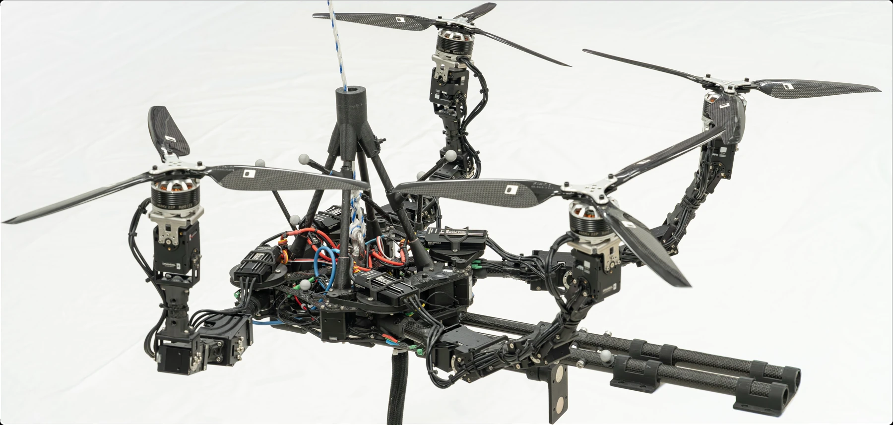

Rotor-position morphing
Redistribute rotor loads by changing the moment arms available for thrust allocation.
Morphable multirotors · Predictive control
Feasibility-Aware MPC for Rotor Thrust Saturation Mitigation in Morphable Multirotors
AcceptedIEEE Robotics and Automation Letters

Coordinating rotor-position morphing and attitude-reference correction to mitigate rotor thrust saturation during off-center payload transportation.
The challenge
An off-center payload adds a moment that must be balanced in flight. Even when the total thrust capacity is sufficient, the required thrust can concentrate on a subset of rotors and drive them into saturation.
STRIDER changes the rotor positions to reshape the thrust-allocation geometry. A nonlinear model predictive controller coordinates this motion with attitude-reference correction, accounting for individual thrust limits and the finite response of the morphing mechanism.
The approach

Redistribute rotor loads by changing the moment arms available for thrust allocation.
Adjust the nominal attitude reference when rapid or large moment demands cannot be handled by morphing alone.
Predict the coupled attitude and morphing response while accounting for rotor thrust, workspace, collision-avoidance, and morphing-rate constraints.
Flight experiments
Thrust redistribution, payload pickup, and lateral transportation.
Public video forthcoming
The supplementary video will be available here.
Watch on YouTubeObserve how rotor-position changes redistribute the load during hover and lateral motion.
See the transient response when an off-center payload is attached and transported.
Simulation & visualization
A local MuJoCo simulation of the maneuvers studied in the paper, with four controller options and a plotting UI.
Observe the vehicle and its morphing geometry during the experimental motion scenarios.
Explore how different control choices affect the response to an off-center payload.
Use the plotting UI to inspect motion, rotor thrusts, and morphing states.
The curated simulation release is in preparation. The linked repository currently contains the development version.
Controller comparison
Explore the control strategies included in the planned simulation release.
Full formulation
Jointly optimizes rotor-position commands and attitude-reference correction within the NMPC prediction horizon.
Reference method: gradient-based morphology optimization, based on C. Kim et al., “A morphing quadrotor that can optimize morphology for transportation,” IROS 2021.
Publication
Accepted to IEEE Robotics and Automation Letters. The paper link, author information, DOI, and citation will be added with the publication details.
Morph to Survive: Feasibility-Aware MPC for Rotor Thrust Saturation Mitigation in Morphable Multirotors
Bibliographic details forthcoming